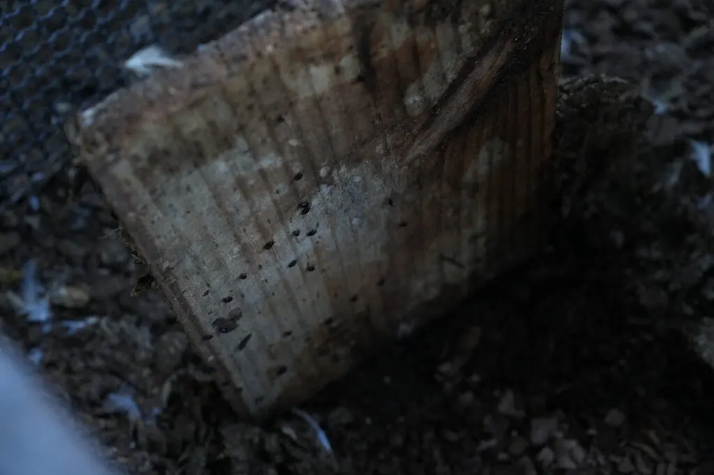
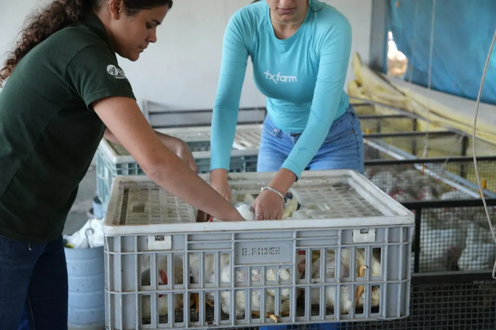
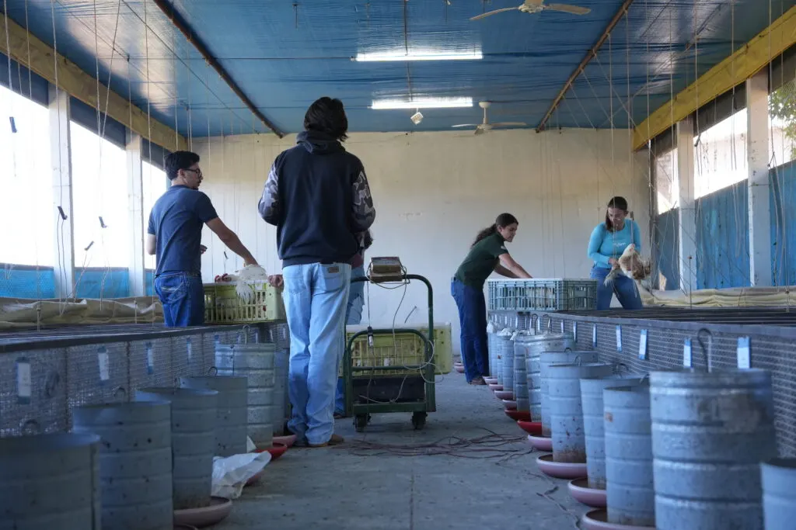

Behind one of the most competitive sectors of Brazilian agribusiness lies a silent challenge that affects productivity, costs, animal welfare and sanitary safety: the quality of poultry litter.
It is precisely in this context that NanoBrasil is developing one of its main technological bets. After years of research and development, the company has created a nanotechnology-based platform capable of acting simultaneously on different factors that affect poultry litter, offering a first-of-its-kind approach to a problem that influences the entire broiler production chain.

The technology seeks to control, at the same time, moisture, ammonia emissions, the proliferation of microorganisms and the development of the lesser mealworm — one of the main disease vectors in poultry farming.
“We're not talking about just a new input for farms. We're talking about a technology capable of raising the sanitary standard of production, reducing losses and creating a new paradigm for poultry litter management. The potential impact is enormous for producers, for industry and for Brazil's competitiveness in the international market,” says Oscar Geigner, co-founder and commercial director of NanoBrasil.
Poultry farming's invisible challenge
Poultry litter is made of materials such as wood shavings, rice husks and other plant substrates used to absorb moisture, protect the birds and provide thermal comfort throughout the production cycle.
The problem is that, over approximately 42 days, this environment accumulates droppings, feed residues, water and organic matter. As a result, it becomes a breeding ground for bacteria and fungi, ammonia emissions and the development of the lesser mealworm (Alphitobius diaperinus).

According to Manuel Rodríguez, NanoBrasil's Innovation and Development coordinator, the company realized the challenge was much bigger than simple microbiological control.
“We began to study the poultry chain in depth and understood that the biggest challenge was not just controlling microorganisms, but the entire poultry litter environment. It was precisely this complexity that caught our attention. We realized there was an opportunity to develop a technology that would act on several of these problems at the same time.”
When litter becomes a health risk
The consequences go far beyond the farms' daily management. Increased moisture and microbiological load encourage respiratory problems, pododermatitis, lower weight gain and poorer feed conversion.
In more severe cases, these factors can increase animal mortality, directly compromising the productivity and profitability of operations.

In addition, the presence of pathogens such as Salmonella may require intensive cleaning and disinfection processes, extending the downtime between flocks and reducing the farms' production capacity.
For a sector that depends on maintaining high sanitary standards to access international markets, controlling these factors is a strategic issue.
From traditional solutions to a new approach
Treating poultry litter with quicklime has been part of poultry farming routine for decades and remains one of the main strategies used to raise litter pH and reduce the survival of some microorganisms. Studies show the technique is effective in controlling certain pathogens, especially during the downtime between flocks.
At the same time, researchers point out that this approach acts mainly on specific aspects of poultry litter and can lose effectiveness over the production cycle, as moisture and organic load increase. In addition, improper use of lime can cause an excessive rise in pH and even foot lesions in the birds, requiring careful management.
It was precisely in view of these limitations that NanoBrasil directed its research toward a technology capable of acting simultaneously on the different factors that influence poultry litter quality.
A multifunctional technology platform
It was from this understanding that the solution developed by NanoBrasil was born.
Initially, the project sought to create a more efficient alternative to antimicrobial materials already used by the sector. But as the research evolved, the company moved to a much broader approach.
“Instead of offering just a chemical product, we began developing a technology platform based on nanocomposites and multifunctional substrates capable of lasting throughout the entire production cycle,” explains Manuel.
Nanotechnology is the element that makes it possible to combine different functionalities in a single material.
“We were able to control the distribution of the active ingredients within the drying matrix, increasing the surface area available for interaction with microorganisms, gases and moisture. This allows us to use smaller amounts of active material, increase efficiency and achieve a more controlled release throughout the production cycle.”
According to the researcher, the differentiator lies precisely in integrating functions that today are usually treated separately.
“We're not developing just a new chemical product. We're developing a multifunctional technological asset that acts simultaneously on microbiological control, ammonia adsorption, moisture control and the potential reuse of the material at the end of the cycle. This integration simply doesn't exist in the solutions currently available on the market.”
Promising results
The first results observed during development point to a very promising scenario.
The studies showed stability of the materials developed, as well as antimicrobial activity, moisture retention capacity and potential for ammonia adsorption.

“We also observed very promising results regarding antimicrobial activity, as well as moisture retention capacity and ammonia adsorption potential.”
The technology is now moving on to validation stages in settings closer to real production conditions, in partnership with universities, research centers and specialized farms.
An edge for the world's largest exporter
The technology's potential becomes even more relevant considering the weight of poultry farming in the Brazilian economy.
According to the Brazilian Animal Protein Association (ABPA), Brazil exported more than 5.2 million tons of chicken meat in 2024, maintaining world leadership in the sector and generating almost US$ 10 billion in revenue.
In a highly competitive market dependent on strict sanitary standards, biosecurity gains can represent strategic advantages for the entire production chain.
“The main gain is to make poultry litter management a more efficient and safer process. We expect to significantly improve litter conditions throughout the rearing cycle, reducing the microbiological load, controlling moisture and lowering the concentration of ammonia in the environment.”

According to Manuel, the impacts can be seen directly in animal welfare, production performance and the reduction of economic losses.
“We believe this technology may represent a paradigm shift in the way poultry litter is managed in Brazil. Today, most available solutions act in a targeted way, treating only one specific problem.”
ESG, fertilizers and the circular economy
The benefits are not limited to production performance.
The technology was also designed to generate environmental gains and strengthen practices aligned with the ESG requirements increasingly present in agribusiness.
“From an environmental perspective, using mineral-based products incorporated into drying agents can bring benefits for the later use of the litter as fertilizer. Besides reducing waste, the technology adds value to the material after use and contributes to more sustainable production aligned with the requirements of domestic and international markets.”
The result is a solution that connects biosecurity, productivity and sustainability in a single technology platform.
Far beyond poultry farming
Although the initial focus is on the poultry chain, NanoBrasil already sees future applications in other agribusiness segments.
The knowledge generated could be adapted to areas such as pig farming, intensive livestock farming, odor control, adsorbent materials and fertilizers.
“More than launching a new product, our goal is to introduce a new technological concept for sanitary management in animal production. The potential goes far beyond poultry farming and can open the way for a new generation of sustainable, high-tech solutions for Brazilian agribusiness.”

For NanoBrasil, the project represents not only a market opportunity, but also the chance to demonstrate how nanotechnology can solve concrete challenges in one of the most important sectors of the national economy, strengthening the competitiveness of Brazilian agribusiness and creating new innovation opportunities for the entire production chain.